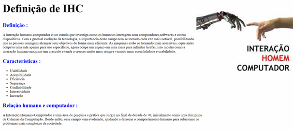
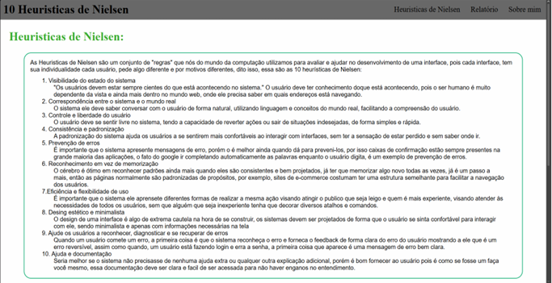
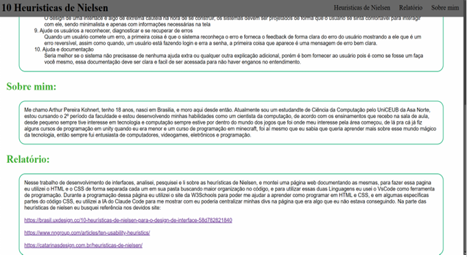

Lista de Projetos
Hub de paginas
Esse hub de paginas foi criado para demonstrar minhas habilidades em desenvolvimento web, como foi pedido na matéria de Desenvolvimento Web, nesse projeto temos uma série de páginas que mostram diferentes aspectos sobre critérios do desenvolvimento de interfaces.
Acessar projetoPrimeiro Projeto sobre IHC
Este é o meu primeiro projeto, onde faço um trabalho sobre IHC(Interação Humano-Computador).

Segundo Projeto
Este é o meu segundo projeto, fiz uma interface web aplicando a navigation bar, e nele coloquei informações sobre as heurísticas de Nielsen.

